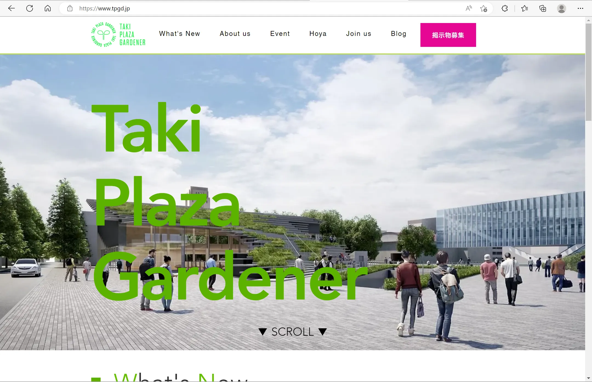

2023年3月14日
TPG広報班紹介【2023新歓ブログリレーvol-5】

こんにちは。広報班の遠藤です。新歓ブログリレーということで、今回は広報班について紹介します。まず、広報班は現在４人で活動しておりTPGの中でも一番人数が少ないです。Taki
Plazaはぐるなびの会長である滝久雄氏の莫大な支援によって2020年12月に竣工した学生交流施設であり、以前と比較してTaki
Plaza
の知名度は上がったものの、我々TPGの知名度は低いままです。なので、広報班はその知名度を上げることを目標として活動しています。広報班の仕事内容としては、主にSNSの管理・運営、TPGのホームページの内容作成、広報班企画（１昨年の大岡山マップ）、TPGの広報誌である「Hoya」の制作など幅広いものからなっています。
・SNS
主にTwitterやInstagram、YouTubeを管理しています。いわゆる“中の人”ってやつですね。TPGでは若葉祭やTaki
Barなど定期的にイベントを開催しているので、それについての募集や宣伝をしていることが多いです。また、最近では制作班と協力してYouTubeでの動画制作、アップロードも行っています。SNS動かすのが好きな人や、中の人をやってみたい人、こまめに活動したいなって人におすすめです！


・ホームページ
TPGの公式ホームページの作成、改良を日々行っています。ホームページにはTPGの人たちのインタビューやTPG主催のイベントの詳細、ブログなどが掲載されています。ホームページなどのサイトを管理することが好きな人におすすめです。
・広報班企画
広報班では不定期で、東工大生向けの広報企画を実施しています。１昨年には、「大岡山マップをおすすめスポットで埋め尽くそう！」という企画をおこないました。この企画はTaki
Plazaの壁に貼った大岡山マップにおススメのお店・場所を書いた付箋を貼るというもので、多くの付箋が貼られて非常に盛り上がりました。今後もこのようなイベントを行っていくので、ゆる〜いイベントをやってみたい人はぜひ、広報班へお越しください。
・Hoya
広報班では、TPGのフリーペーパー「Hoya」を制作・発行しています。年に春と秋に２回発行しており、基本的には１から制作を行っています。現状では人数が少ないので、今後どのように制作・発行されていくか分かりませんが、記事を作ることに興味がある人におすすめです。
以上が広報班の具体的な活動内容となります。まとめると、Taki Plaza Gardenerの広報活動をしているということです。ほかにも、週１回の火曜日の定例会では、その週において行った結果報告や、新たな議題の審議などを行っています。現状広報班の班員は4名しかおらず、人数が少ないので、できる活動も限られていきます。ぜひこの記事を見て広報班に興味を持った方はTwitterから連絡ください。まだまだ募集しています。あなたも「即戦力」間違いなし！